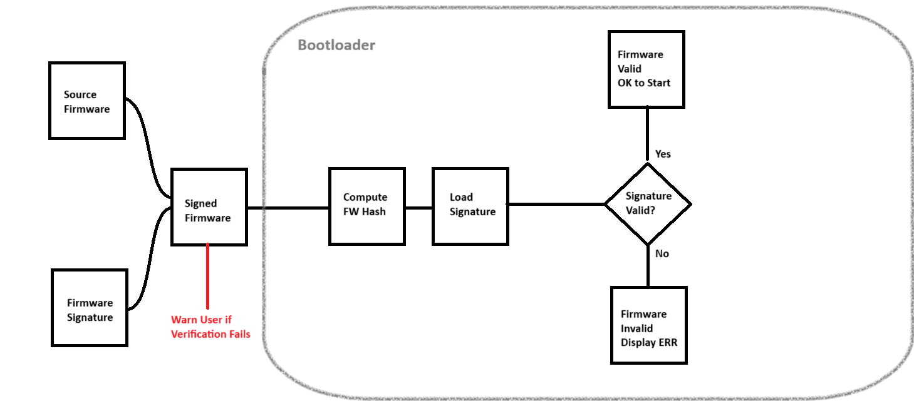

What is Secure Boot?
In my experience dabbling with development boards, one area that I wish more developers touched on was the principle of Secure Boot. This idea comes the concept of attackers being able to hijack embedded devices and small form factor computers at the firmware level, taking advantage of the low security benchmarks of IoT devices and opening the door to many potential vulnerabilities, such as remote code execution and network traversal.
By securing IoT devices at the root of execution, we can introduce some peace of mind when it comes to cyberattacks. My strategy is threefold:
- First, I introduce a means of creating verification firmware that resides in a location of non-volatile memory. The computer is intended to run this portion of code first, forcing the end user's firmware to pass verification before execution.
- Next, I append asymmetric encryption signatures to the firmware. In conjunction with the size and hash of the firmware itself, this signature is used by the verification program to verify that the end user's firmware is valid and can be executed.
- Finally, I test attacking the board to demonstrate functionality of the two-pronged approach. Tests include appending a known bad signature to signed firmware and mismatching firmware and its signature.
I will demonstrate this approach on a handful of development boards, including the ESP32 and Arduino Uno (ATmega328P). Later, I plan to append this article with more experiments to demonstrate the functionality of my secure boot approach, including the Raspberry Pi Zero 2 and the BeagleBone Black.
Securing the ESP32
The first board I implemented my secure boot strategy on was the ESP32. One of the nice parts about building software for the ESP32 is the ESP-IDF framework, which helped me avoid reinventing the wheel and made implementing my secure boot programs much easier.
The first part of the project was to develop the bootloader. Using the ESP-IDF CLI, I was able to quickly spin up a new project using create-project. I then needed to define a custom partition table for my bootloader to use when referencing locations in physical memory, such as the physical init location, firmware partitions, and its own starting location. You can view my partitions file here.
Next, we need to define a special block to append at the end of the firmware binary that will hold information for versioning, hashing, and signing. This is very important for the bootloader and signature verification process, as these fields are expected and the process will not work without their presence. The format of this block is shown to the right.
With the metadata and partitions defined, we can continue with developing the bootloader firmware. The full code can be seen here. Some functions I have implemented include:
- Verifying the firmware signature, where the public key of the bootloader is parsed and verified against the firmware's metadata,
- Verifying the firmware hash, where the hash from firmware metadata is compared against a just-in-time computation of the firmware's hash,
- The main function, which runs some secondary checks to ensure the existence of firmware and that flash memory can be read correctly. There is also logic in
app_mainto compare the current version of firmware and the version in metadata, acting as a form of rollback protection.
With the bootloader in place, we next move on to the firmware signing tool. This tool will be incredibly flexible and can be re-used for later boards, such as the ATMega328P, Raspberry Pi Zero 2, and the BeagleBone Black. The flow of the firmware signing tool is simple:
- Take as input a compiled firmware binary (
firmware.bin) - Hash the binary using SHA-256
- Sign the hash using RSA or ECDSA
- Append or package the signature alongside the firmware
- Output the metadata
I decided to use Python to implement the firmware signing tool for its flexibility in typecasting and wide support for external libraries, such as pycryptodome which I use for cryptography. You can find the completed firmware signing tool here. The args for this tool include:
- --key, which contains the path to the private signing key. Required.
- --in, the path to the firmware binary. Required.
- --out, the target path where the signed firmware will go. Required.
- --rsa, a boolean which will utilize RSA instead of ECDSA. Set to
Falseby default.
With the bootloader and signature script in place, we can test ESP32 secure boot. Open the Details pane below to see the program in action.
Click here to see the ESP32 secure boot testing strategy.
ESP32 Testing Strategy
Pictured is a flowchart of the ESP32 bootloader's expected behavior. For all tests, I am signing firmware that prints a message to the console using printf.
Test valid signed firmware
In this scenario, the firmware is signed with the correct private key and has the correct hash in metadata. In this instance, all six checks will pass and the verified firmware will run normally on the ESP32.
✅ Hello from dummy app!
Test tampered firmware
We can easily tamper with firmware by corrupting the hash in metadata, which we achieve by flipping the last bit of the hash in the Python signing tool. The Python script will append the correct signature, but because the hash doesn't match, it fails check #3 (Hash valid) and invalidates the firmware, forcing the ESP32 to reset.
❌ Firmware hash verification failed
Signature Test
We can also corrupt the signature by flipping the last bit of the public key used in the Python script. When the application runs, it fails check #4 (Signature valid) and invalidates the firmware, forcing the ESP32 to reset.
❌ Firmware signature verification failed
Rollback Test
This test also involves corrupting the metadata to set the Version parameter to a lower number than what's saved on the bootloader. In this case, the bootloader runs version 2.0 while I reset the firmware to version 1.0. In this case, while the hash and signature are correct, the bootloader fails check #5 (Version valid) and invalidates the firmware, forcing the ESP32 to reset.
❌ Firmware rollback detected
Securing the ATmega328P
Next, I wanted to tackle the ATmega328P via some old Arduino Uno boards I had laying around. These boards came with ATmega16U2 microchips, which are 8-bit RISC-based microcontrollers with 16 KB ISP flash memory, 512B EEPROM, and 512B SRAM, among other things. While the original Arduino Uno boards are retired, they serve as a launchpad for some deeper embedded systems work to make these boards more secure.
A significant constraint for the Uno that the ESP32 does not have is the lack of available memory. We only have 512 bytes of EEPROM to use, and we need to be clever about how this technology is implemented on-board. To help achieve this, I used avr-gcc for the AVR toolchain and CustomJWT for a crypto library. Additionally, I decided to have the error status utilize the onboard LED (PB5) to represent firmware status instead of relying on a printf statement as was demonstrated for the ESP32.
For the bootloader script, the following functions were included. You can see more in the full script here.
- Hardcoded entries for the app starting address, signature address, and app max size.
read_flash, which read information from a 16-bitaddrand stored it in an 8-bitbuffer.compute_firmware_hash, which computes the hash of the firmware it's verifying and stores it in memory usingread_flash.- Simple methods to
load_signatureandverify_signature. jump_to_application, self-explanatory.main, which throws it all together. It also defines the error sequence for the onboard LED.
I had to change up my signature program in Python a little bit to make it work for the Uno. In the bootloader script, we have a constraint for the app's maximum size (APP_MAX_SIZE). This size is used for hash computation, so if we upload firmware that doesn't fit the max size, we must pad the unused bytes. I chose to pad mine with 0xFF (all 1's) for simplicity. Using the hashlib, binascii, and ecdsa libraries, the new signature program is more robust and functions more like a one-click solution for firmware signing than the ESP version.
Below are the functions for the new Python script. You can see the full script here.
- Constants for
APP_MAX_SIZE and SIGNATURE_SIZE. read_hex_file, which reads a hex file using theIntelHexlibrary, returning binary data.read_key_file, which reads a hex-encoded keyfile.pad_firmware, the function responsible for padding firmware to APP_MAX_SIZE.sign_firmware, which signs the SHA-256 hash of the input firmware with the private key.verify_signature, which verifies the signing key on the NIST256p curve.create_signed_image, creating the final version of the firmware with signature appended and padded to APP_MAX_SIZE.
At this point in the development process, I realized that when I flashed my bootloader program onto the Uno, it would be overwritten when I flashed my test firmware, and vice versa. I was not able to see the error LED pattern when I flashed my firmware, and likewise I was not able to see the correct LED pattern when I flashed the bootloader. I came to the realization that there was no way for the two programs to occupy the same space in memory like I was able to do with the ESP32 - this required a different approach where I overwrote some of the factory code on the Uno.
I needed to burn my bootloader onto the Uno, but how could I do that? Fortunately, I had another Uno laying around and I was able to use the ISP Programmer function to use one uno as a programmer and another as a target. By using Uno-to-Uno firmware flashing technology, I would be able to overwrite the bootloader on the target Uno with the bootloader program I wrote previously, but this would result in an (almost) irreversable process - the main consequence being that I could no longer write to the target Uno via USB. We could reframe this and consider it an advantage in port security - if you're not using that USB port, you may as well lock it down!
I followed conventional ISP wiring (SPI + RESET). Here are the details:
- Pin D10 on the Programmer Uno maps to the RESET pin on the Target Uno.
- Pins D11, D12, and D13 on the Programmer Uno map to their counterpart on the Target Uno, respectively.
- The 5V and GND pins on the Programmer Uno map to their counterpart on the Target Uno, respectively.
- I found it necessary to include a 10 µF capacitor between the RESET and GND pins on the Programmer Uno to prevent it from power cycling when attempting to send the signed firmware to the Target Uno. This may not be necessary for everyone.
Similar to the ESP32, I included a testing battery for the Uno. You can read more in the Details section below.
Click here to see the Uno secure boot testing strategy.
Uno Testing Strategy
Pictured is a flowchart of the Uno bootloader's expected behavior. For all tests, I am signing firmware that blinks the Built-in LED twice in 150ms intervals, then pauses for one second. I will refer to this as the Pulse Signal.
Test valid signed firmware
In this scenario, the firmware is signed with the correct private key and has the correct hash in the signing script. In this instance, the primary check will pass and the verified firmware will run normally on the Uno.
✅ Pulse signal observed.
Signature Test
Like last time, we can corrupt the signature by flipping the last bit of the public key used in the Python script. When the application runs, it will triggger the warning message from the Python script and it will fail the bootloader verification test. The Uno will be stuck in the error signal pattern until it is reset.
We can also corrupt the hash after it has been appended to the firmware's binary (by flipping a bit.) The bootloader will catch this and fail in the primary check, placing the Uno in the error signal pattern until it is reset.
❌ Error signal observed.
Photo Sources
OpenAI: header image
arduino.cc: Arduino Uno board design
wokwi.com: Arduino Uno wiring schematic for ISP programming
Published August 2025